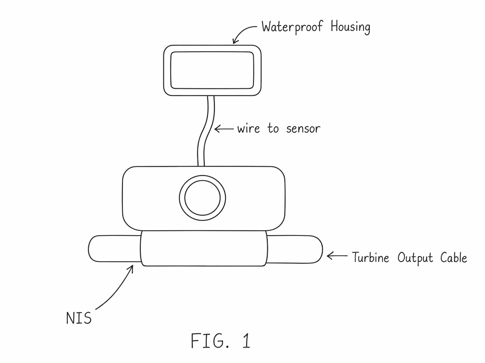

CurrentWise uses a Non-Intrusive Sensor (NIS) to monitor turbine output cables externally. The system allows real-time electrical monitoring while reducing invasive installation procedures.

Prototype concept sketch of the Non-Intrusive Sensor attached to a turbine output cable.
Many monitoring systems require invasive installation methods or direct interaction with energized systems.
External sensing reduces the need to directly interfere with electrical conductors.
The NIS system provides useful electrical data for maintenance, efficiency, and system analysis.